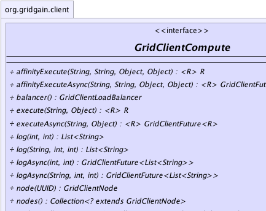
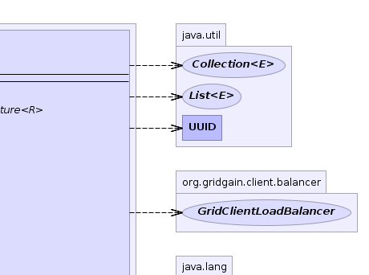
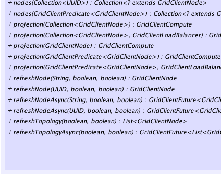
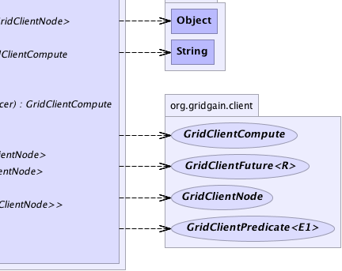

|
|

|

|
|

|

|
|
GridGain™ 4.0.0
Java Client |
|||||||||
| PREV CLASS NEXT CLASS | FRAMES NO FRAMES | |||||||||
| SUMMARY: NESTED | FIELD | CONSTR | METHOD | DETAIL: FIELD | CONSTR | METHOD | |||||||||
public interface GridClientCompute
A compute projection of grid client. Contains various methods for task execution, full and partial (per node) topology refresh and log downloading.
| Wiki | |
| Forum |
|  |  |
|  |  |
| Method Summary | ||
|---|---|---|
|
affinityExecute(String taskName,
String cacheName,
Object affKey,
Object taskArg)
Executes task using cache affinity key for routing. |
|
|
affinityExecuteAsync(String taskName,
String cacheName,
Object affKey,
Object taskArg)
Asynchronously executes task using cache affinity key for routing. |
|
GridClientLoadBalancer |
balancer()
Gets balancer used by projection. |
|
|
execute(String taskName,
Object taskArg)
Executes task. |
|
|
executeAsync(String taskName,
Object taskArg)
Asynchronously executes task. |
|
List<String> |
log(int lineFrom,
int lineTo)
Gets contents of default log file ( GRIDGAIN_HOME/work/log/gridgain.log). |
|
List<String> |
log(String path,
int lineFrom,
int lineTo)
Gets contents of custom log file. |
|
GridClientFuture<List<String>> |
logAsync(int lineFrom,
int lineTo)
Asynchronously gets contents of default log file ( GRIDGAIN_HOME/work/log/gridgain.log). |
|
GridClientFuture<List<String>> |
logAsync(String path,
int lineFrom,
int lineTo)
Asynchronously gets contents of custom log file. |
|
GridClientNode |
node(UUID id)
Gets node with given id from most recently refreshed topology. |
|
Collection<? extends GridClientNode> |
nodes()
Gets most recently refreshed topology. |
|
Collection<? extends GridClientNode> |
nodes(Collection<UUID> ids)
Gets nodes for the given IDs based on most recently refreshed topology. |
|
Collection<? extends GridClientNode> |
nodes(GridClientPredicate<GridClientNode> filter)
Gets nodes that passes the filter. |
|
GridClientCompute |
projection(Collection<GridClientNode> nodes)
Creates a projection that will communicate only with specified remote nodes. |
|
GridClientCompute |
projection(Collection<GridClientNode> nodes,
GridClientLoadBalancer balancer)
Creates a projection that will communicate only with specified remote nodes. |
|
GridClientCompute |
projection(GridClientNode node)
Creates a projection that will communicate only with specified remote node. |
|
GridClientCompute |
projection(GridClientPredicate<GridClientNode> filter)
Creates a projection that will communicate only with nodes that are accepted by the passed filter. |
|
GridClientCompute |
projection(GridClientPredicate<GridClientNode> filter,
GridClientLoadBalancer balancer)
Creates a projection that will communicate only with nodes that are accepted by the passed filter. |
|
GridClientNode |
refreshNode(String ip,
boolean includeAttrs,
boolean includeMetrics)
Gets node by IP address. |
|
GridClientNode |
refreshNode(UUID id,
boolean includeAttrs,
boolean includeMetrics)
Gets node by its ID. |
|
GridClientFuture<GridClientNode> |
refreshNodeAsync(String ip,
boolean includeAttrs,
boolean includeMetrics)
Asynchronously gets node by IP address. |
|
GridClientFuture<GridClientNode> |
refreshNodeAsync(UUID id,
boolean includeAttrs,
boolean includeMetrics)
Asynchronously gets node by its ID. |
|
List<GridClientNode> |
refreshTopology(boolean includeAttrs,
boolean includeMetrics)
Gets current topology. |
|
GridClientFuture<List<GridClientNode>> |
refreshTopologyAsync(boolean includeAttrs,
boolean includeMetrics)
Asynchronously gets current topology. |
|
| Method Detail |
|---|
GridClientCompute projection(GridClientNode node)
throws GridClientException
If current projection is dynamic projection, then this method will check is passed node is in topology. If any filters were specified in current topology, this method will check if passed node is accepted by the filter. If current projection was restricted to any subset of nodes, this method will check if passed node is in that subset. If any of the checks fails an exception will be thrown.
GridClientException - If resulting projection is empty.node - Single node to which this projection will be restricted.
GridClientCompute projection(GridClientPredicate<GridClientNode> filter) throws GridClientException
If current projection is dynamic projection, then filter will be applied to the most relevant topology snapshot every time a node to communicate is selected. If current projection is a static projection, then resulting projection will only be restricted to nodes that were in parent projection and were accepted by the passed filter. If any of the checks fails an exception will be thrown.
GridClientException - If resulting projection is empty.filter - Filter that will select nodes for projection.
GridClientCompute projection(Collection<GridClientNode> nodes) throws GridClientException
If current projection is dynamic projection, then this method will check is passed nodes are in topology. If any filters were specified in current topology, this method will check if passed nodes are accepted by the filter. If current projection was restricted to any subset of nodes, this method will check if passed nodes are in that subset (i.e. calculate the intersection of two collections). If any of the checks fails an exception will be thrown.
GridClientException - If resulting projection is empty.nodes - Collection of nodes to which this projection will be restricted.
GridClientCompute projection(GridClientPredicate<GridClientNode> filter, GridClientLoadBalancer balancer) throws GridClientException
If current projection is dynamic projection, then filter will be applied to the most relevant topology snapshot every time a node to communicate is selected. If current projection is a static projection, then resulting projection will only be restricted to nodes that were in parent projection and were accepted by the passed filter. If any of the checks fails an exception will be thrown.
GridClientException - If resulting projection is empty.filter - Filter that will select nodes for projection.balancer - Balancer that will select balanced node in resulting projection.
GridClientCompute projection(Collection<GridClientNode> nodes, GridClientLoadBalancer balancer) throws GridClientException
If current projection is dynamic projection, then this method will check is passed nodes are in topology. If any filters were specified in current topology, this method will check if passed nodes are accepted by the filter. If current projection was restricted to any subset of nodes, this method will check if passed nodes are in that subset (i.e. calculate the intersection of two collections). If any of the checks fails an exception will be thrown.
GridClientException - If resulting projection is empty.nodes - Collection of nodes to which this projection will be restricted.balancer - Balancer that will select nodes in resulting projection.
GridClientLoadBalancer balancer()
GridClientLoadBalancer.<R> R execute(String taskName, Object taskArg) throws GridClientException
GridClientException - In case of error.taskName - Task name or task class name.taskArg - Optional task argument.
<R> GridClientFuture<R> executeAsync(String taskName, Object taskArg) throws GridServerUnreachableException, GridClientClosedException
GridServerUnreachableException - If none of the servers can be reached.
GridClientClosedException - If client was closed manually.taskName - Task name or task class name.taskArg - Optional task argument.
<R> R affinityExecute(String taskName, String cacheName, Object affKey, Object taskArg) throws GridClientException
GridClientException - In case of error.taskName - Task name or task class name.cacheName - Name of the cache on which affinity should be calculated.affKey - Affinity key.taskArg - Optional task argument.
<R> GridClientFuture<R> affinityExecuteAsync(String taskName, String cacheName, Object affKey, Object taskArg) throws GridServerUnreachableException, GridClientClosedException
GridServerUnreachableException - If none of the servers can be reached.
GridClientClosedException - If client was closed manually.taskName - Task name or task class name.cacheName - Name of the cache on which affinity should be calculated.affKey - Affinity key.taskArg - Optional task argument.
Collection<? extends GridClientNode> nodes()
GridClientNode node(UUID id)
id - Node ID.
null if node with given id was not found.Collection<? extends GridClientNode> nodes(Collection<UUID> ids)
ids - Node IDs.
Collection<? extends GridClientNode> nodes(GridClientPredicate<GridClientNode> filter)
filter - Node filter.
GridClientNode refreshNode(UUID id,
boolean includeAttrs,
boolean includeMetrics)
throws GridClientException
GridClientException - In case of error.id - Node ID.includeAttrs - Whether to include node attributes.includeMetrics - Whether to include node metrics.
null if node doesn't exist.GridClientFuture<GridClientNode> refreshNodeAsync(UUID id, boolean includeAttrs, boolean includeMetrics) throws GridServerUnreachableException, GridClientClosedException
GridServerUnreachableException - If none of the servers can be reached.
GridClientClosedException - If client was closed manually.id - Node ID.includeAttrs - Whether to include node attributes.includeMetrics - Whether to include node metrics.
GridClientNode refreshNode(String ip,
boolean includeAttrs,
boolean includeMetrics)
throws GridClientException
GridClientException - In case of error.ip - IP address.includeAttrs - Whether to include node attributes.includeMetrics - Whether to include node metrics.
null if node doesn't exist.GridClientFuture<GridClientNode> refreshNodeAsync(String ip, boolean includeAttrs, boolean includeMetrics) throws GridServerUnreachableException, GridClientClosedException
GridServerUnreachableException - If none of the servers can be reached.
GridClientClosedException - If client was closed manually.ip - IP address.includeAttrs - Whether to include node attributes.includeMetrics - Whether to include node metrics.
List<GridClientNode> refreshTopology(boolean includeAttrs, boolean includeMetrics) throws GridClientException
GridClientException - In case of error.includeAttrs - Whether to include node attributes.includeMetrics - Whether to include node metrics.
GridClientFuture<List<GridClientNode>> refreshTopologyAsync(boolean includeAttrs, boolean includeMetrics) throws GridServerUnreachableException, GridClientClosedException
GridServerUnreachableException - If none of the servers can be reached.
GridClientClosedException - If client was closed manually.includeAttrs - Whether to include node attributes.includeMetrics - Whether to include node metrics.
List<String> log(int lineFrom, int lineTo) throws GridClientException
GRIDGAIN_HOME/work/log/gridgain.log).
GridClientException - In case of error.lineFrom - Index of line from which log is get, inclusive (starting from 0).lineTo - Index of line to which log is get, inclusive (starting from 0).
GridClientFuture<List<String>> logAsync(int lineFrom, int lineTo) throws GridServerUnreachableException, GridClientClosedException
GRIDGAIN_HOME/work/log/gridgain.log).
GridServerUnreachableException - If none of the servers can be reached.
GridClientClosedException - If client was closed manually.lineFrom - Index of line from which log is get, inclusive (starting from 0).lineTo - Index of line to which log is get, inclusive (starting from 0).
List<String> log(String path, int lineFrom, int lineTo) throws GridClientException
GridClientException - In case of error.path - Log file path. Can be absolute or relative to GRIDGAIN_HOME.lineFrom - Index of line from which log is get, inclusive (starting from 0).lineTo - Index of line to which log is get, inclusive (starting from 0).
GridClientFuture<List<String>> logAsync(String path, int lineFrom, int lineTo) throws GridServerUnreachableException, GridClientClosedException
GridServerUnreachableException - If none of the servers can be reached.
GridClientClosedException - If client was closed manually.path - Log file path. Can be absolute or relative to GRIDGAIN_HOME.lineFrom - Index of line from which log is get, inclusive (starting from 0).lineTo - Index of line to which log is get, inclusive (starting from 0).
|
GridGain™ 4.0.0
Java Client |
|||||||||
| PREV CLASS NEXT CLASS | FRAMES NO FRAMES | |||||||||
| SUMMARY: NESTED | FIELD | CONSTR | METHOD | DETAIL: FIELD | CONSTR | METHOD | |||||||||
|
GridGain - Real Time Big Data
|
|
|